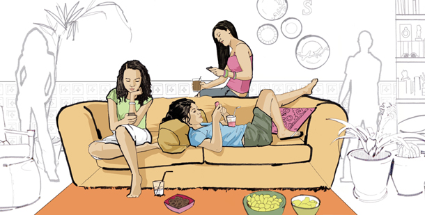

Las Redes Sociales en la adolescencia
Autora:Anel Peralta García
Las Redes Sociales en la adolescencia
Autora:Anel Peralta García
Introducción
Realizamos esta investigación porque nos parece necesario que la gente sepa para qué sirven las redes sociales y, la cuestión de por qué los adolescentes pasan tanto tiempo en el ordenador. Queremos hacer esta investigación porque nos interesan mucho las conclusiones que saquemos para aclarar las dudas que tiene la gente y tenemos nosotras sobre este tema… En general, los adultos no saben que sus hijos entran en estas redes; muchas de las situaciones como, pederastia, hackers o temas relacionados con el abuso sexual, se producen por el mal uso de Internet y, hoy en día, los adolescentes suministran demasiada información propia al resto de Internet (en las redes), no tienen ni idea de los peligros que puede causar mostrarlo de este modo. En la actualidad, vivimos en una sociedad en la que la gente se interesa mucho por la vida de los demás, se olvidan de disfrutar de su propia vida y creen que por pasar tanto tiempo en el ordenador sus relaciones con las demás personas serán más divertidas y cómodas con el tiempo, no se dan cuenta de que es mejor relacionarse personalmente, ya que el contacto es mejor, más seguro y cómodo.
Autora:Anel Peralta García
Objetivos del estudio
El objetivo final de este trabajo es demostrar la influencia de las redes sociales en la vida social y cotidiana de los adolescentes. Nuestra hipótesis: Creemos que los adolescentes pasan demasiado tiempo en el ordenador (concretamente en las redes sociales), para mejorar las relaciones con sus amigos y conocidos, porque las redes incorporan unos contenidos que le permiten pasar un buen rato y poder hablar con sus compañeros durante mucho tiempo. Normalmente entran para comunicarse con sus amigos y conocer gente nueva.
Autora:Anel Peralta García
Revisión Bibliográfica
FUENTES: La información sobre las redes sociales la hemos obtenido principalmente de fuentes que han publicado otros autores (diarios, páginas webs que contienen artículos relacionados con el tema, resultados de encuestas a nivel provincial).
Autora:Anel Peralta García
Aspectos positivos y negativos de las redes
Autora:Anel Peralta García
Positivos
Herramienta que ayuda a conectar a personas estén donde
estén
Permite tener muchas relaciones
Elimina barreras, es decir, a través de la gente que se
conoce, se aprende nuevas formas de pensar o actuar y
también se conocen otras culturas, sobre todo si se tiene
algún amigo de otro país
La gente que no sabe relacionarse muy bien en persona,
puede empezar una relación o amistad a través de una red
social.
Mejorar las relaciones entre gente de distintos países.
Autora:Anel Peralta García
Negativos
Estar mucho tiempo en las redes sociales provoca un
individualismo que aísla a una persona del resto de la
sociedad
Utilizarlas provoca una sociedad más impersonal y más
virtual, al no ser necesaria la presencia física en una
relación “virtual”
Puede llegar a un punto en el que las redes sociales
provoque dependencia en algunas personas, olvidando
otras tareas cotidianas más importantes que estar delante
de un ordenador durante mucho tiempo
Puede ser un problema muy grave, al no controlar bien las
redes sociales, dar información personal a gente que no se
conoce o gente que se cree que se conoce bien y que se puede
confiar en él, pues se han dado graves problemas de raptos,
violaciones, etc. por el mal uso que se les da a las redes
sociales
Autora:Anel Peralta García
Resultado de suministrar información en las redes:
Los adolescentes utilizan las redes como medio de
comunicación, en ellas “cuelgan” sus opiniones sobre las cosas
que les suceden en la vida cotidiana.
Al proporcionar esa información a todo internet (fotos,
direcciones, números telefónicos y más datos privados) pueden
llegar a producirse muchísimas cosas, ya que en muchas
ocasiones los padres o responsables no les permiten o no saben
que sus hijos acceden a estos vínculos públicos.
Los jóvenes no saben cómo se almacena la información y
datos personales ni quién puede tener acceso a ellos en un
momento dado
No se garantiza la privacidad de los datos que, aún siendo
privados, los depositas en sus servidores, ya que quedan
“grabados”.
Pueden utilizar todos tus datos personales o privados para
casi cualquier cosa
Eliminar cualquier rastro de información de estas webs se
propone muy difícil
La gente pueden mirar las IPS de los ordenadores con un
simple mensaje, una foto o un texto y ponerse en contacto
contigo
Autora:Anel Peralta García
¿Que son las redes sociales?
Las redes sociales online son servicios prestados a través de Internet que permiten a los
usuarios generar un perfil público, en el que plasmar datos personales e información de uno
mismo.
Se fundamenta en la “Teoría de los Seis Grados de Separación” de Karinthy en 1929, la cual
afirma que cualquier persona puede estar conectada a otra del planeta a través de una cadena
de personas que no supera los seis intermediarios.
Así, en 1998 nace SixDegrees y en el 2002 Friendster, a partir de aquí comenzarían numerosas
redes sociales cuyo auge comienza en el 2003.
Las redes sociales pueden ser de dos tipos:
1. Generalistas: buscan facilitar las relaciones personales y de ocio Ejemplo:
Facebook
2. Profesionales: fomentan las relaciones entre profesionales. Ejemplo:
Linkedln.com
Tal es el auge de estas redes que se calcula que la Agencia de Protección de Datos de la
Comunidad de Madrid calcula que el 44,6% de los internautas españoles tiene un perfil en
alguna red social; además, se constata que el porcentaje de usuarios de redes sociales es más
alto entre los más jóvenes y decrece con la edad: 7 de cada 10 son internautas menores de 35
años.
El uso de las redes sociales por parte de los menores se está convirtiendo en una actividad
habitual que reporta ventajas tales como el acceso a un nuevo medio de comunicación y
relación social, que les permite, de forma descentralizada, crear y mantener tanto el contacto
directo con sus amigos y conocidos como una nueva forma de identidad. Sin embargo, y como
se señala en el Estudio "Redes Sociales Análisis cuantitativo y cualitativo sobre hábitos, usos y
actuaciones" publicado por Ofcom (Office of Communications) el 2 de abril de 2008, los
menores a pesar de tener ciertas nociones de seguridad descuidan ciertos aspectos y en
ocasiones no otorgan la importancia que se merece a los datos personales e imágenes (tanto
de los demás como de ellos mismos), se comportan de manera menos reprimida y no piensan
en las repercusiones. Estos puntos serán nuestro objetivo de investigación.
Autora:Anel Peralta García
Las redes sociales más usadas
Autora:Anel Peralta García
Imágenes
.jpg)

.jpg)
Autora:Anel Peralta García
Conclusiones
En los gráficos de las encuestas en los que aparecen dos
colegios encuestados, obtuvimos conclusiones. Según en el medio
en que estén, rurales o urbanos, el porcentaje de adolescentes
conectados cambia. Las redes más utilizadas son Tuenti y
Facebook, más utilizadas por las chicas. Tras la integración en
las redes con nuestro “personaje” (Angélica), obtuvimos
conclusiones semejantes a nuestra hipótesis. Las chicas son las
que menos usan las redes para conocer gente; desde que pusimos
nuestra foto principal, empezamos a recibir peticiones de
amistad de chicos, al contrario que con las chicas, se preocupan
más por su privacidad y no dan tanta información. Cuando
conversamos con ellos, sacamos datos personales, direcciones,
números telefónicos… y citas para quedar. Nuestra investigación
aún sigue en curso.
Autora:Anel Peralta García